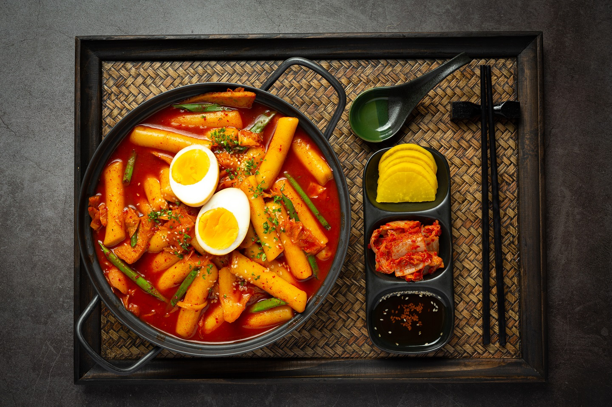

World's Best Tteokbokki

The rice cakes are chewy and tender. It looks super spicy and, originally, it is! But
you can control the amount of chile paste. You might be able to find it easily at food
vendors on the street of Korea. There are always delicious dukbokki boiling and ready
to go. Garnish with
Tteokbokki Ingredients:
- 3 cups water
- 2 dried anchovies, or more to taste
- 3 tablespoons chile paste
- 2 tablespoons white sugar
- Spices and seasonings
- 1 tablespoon soy sauce
- 1 tablespoon corn syrup
- 2 Korean fish cakes, sliced
- ½ onion, thickly sliced
- 1 spring onion, thickly sliced
How to Make Tteokbokki Step-By-Step:
- Combine water and anchovies in a saucepan and bring to a boil. Cook for 10 minutes. Remove anchovies.
- Combine chile paste, sugar, soy sauce, and corn syrup in a bowl to make the sauce.
- Add rice cakes and onion to the anchovy water in the saucepan. Add sauce. Bring to a boil and cook for 5 minutes, stirring occasionally. Add spring onion and boil 3 minutes more.